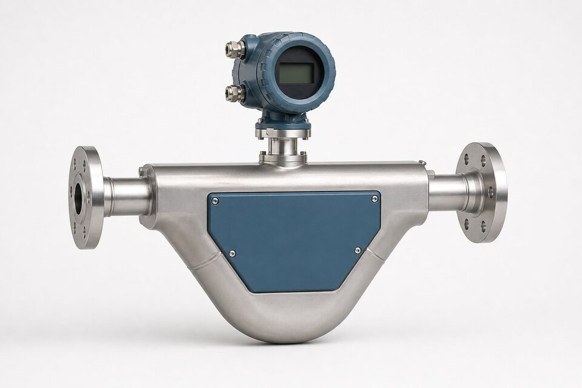

اصل اندازهگیری: نیروی کوریولیس
وقتی جرمی در یک چارچوب مرتعش حرکت میکند، نیروی اینرسی به نام کوریولیس بر آن وارد میشود که متناسب با جرم متحرک است. در فلومتر کوریولیس، یک یا دو لوله اندازهگیری توسط یک سیمپیچ محرک با فرکانس رزونانس خود مرتعش میشوند. جریان سیال درون لوله، پیچش جزئی ایجاد میکند: بخش ورودی لوله در خلاف جهت نوسان و بخش خروجی در جهت آن جابهجا میشود. دو سنسور در دو طرف لوله این حرکت را ثبت میکنند و اختلاف زمانی بسیار کوچک بین سیگنال آنها، مستقیما متناسب با دبی جرمی است. چون اندازهگیری بر پایه جرم واقعی سیال است، تغییرات دما، فشار، ویسکوزیته و پروفایل جریان اثر محسوسی بر نتیجه ندارند؛ ویژگیای که این فناوری را از اغلب فلومترهای حجمی متمایز میکند.

خروجیها: جرم، چگالی و دما
یک فلومتر کوریولیس در واقع سه سنسور در یک تجهیز است. دبی جرمی مستقیم، خروجی اصلی آن است و برای اندازهگیری تجاری و کنترل دقیق بچینگ استفاده میشود. از روی فرکانس رزونانس لولهها، چگالی سیال نیز به صورت پیوسته اندازهگیری میشود؛ این قابلیت در صنایعی که غلظت یا عیار محلول اهمیت دارد، ارزش فرایندی مستقلی ایجاد میکند. دمای سیال نیز به صورت ذاتی برای پایش در دسترس است. از ترکیب دبی جرمی و چگالی، دبی حجمی نیز محاسبه میشود. خروجیها معمولا شامل سیگنال آنالوگ، پالس برای ثبت تجمیعی و پروتکلهای دیجیتال مانند (HART) یا فیلدباس است که ادغام با سیستم کنترل را ساده میکند.
کاربردهای شاخص
- انتقال مالکیت و اندازهگیری تجاری نفت و فرآوردهها با الزامات قانونی.
- بچینگ و اختلاط مواد در صنایع غذایی، شیمیایی و دارویی با دقت بالا.
- اندازهگیری سیالات با ویسکوزیته بالا که برای فلومترهای دیگر دشوار است.
- پایش چگالی و غلظت محلولها به صورت آنلاین.
- اندازهگیری گاز در برخی کاربردهای خاص با مدلهای اختصاصی.
وجه مشترک این کاربردها، ارزش اقتصادی اندازهگیری دقیق است: جایی که حتی یک درصد خطای دبی به هزینه قابل توجه تبدیل میشود، هزینه اولیه بالاتر کوریولیس توجیه میشود. در مقابل، برای نقاط صرفا پایشی یا کاربردهای کماهمیت، فلومترهای سادهتر مانند مغناطیسی یا گردابی انتخاب منطقیتری هستند و نباید بودجه پروژه را در نقاط غیرحساس مصرف کرد.
نکات نصب و محدودیتها
با وجود دقت ذاتی بالا، نصب نادرست میتواند عملکرد فلومتر کوریولیس را تضعیف کند. این تجهیزات به لرزش مکانیکی حساساند؛ بنابراین باید با مهاربندی مناسب و در فاصله از منابع ارتعاش مانند پمپها و کمپرسورها نصب شوند. برای اندازهگیری مایعات، پر بودن کامل لولهها ضروری است و نصب باید به گونهای باشد که حباب هوا یا گاز در لوله جمع نشود. افت فشار این فلومترها نسبت به برخی فناوریها بیشتر است و در خطوط پمپمحور باید در محاسبات هیدرولیکی لحاظ شود. همچنین کالیبراسیون صفر پس از نصب و پر شدن کامل لوله از سیال توصیه میشود تا اثرات تنش مکانیکی نصب حذف گردد.
معیارهای استعلام خرید
در استعلام، سیال و مشخصات آن شامل چگالی و ویسکوزیته، رنج دبی عادی و حداکثر، دما و فشار فرایند، سایز خط، متریال موردنیاز بخش خیس و الزامات ناحیه خطر را ذکر کنید. اگر کاربرد اندازهگیری تجاری یا قانونی است، تاییدیههای مربوطه را نیز در درخواست بیاورید چون همه مدلها آن را ندارند. برای سیالات خورنده، متریال لوله اندازهگیری مانند آلیاژهای خاص باید متناسب انتخاب شود. ذکر نصب فعلی یا شرایط جایگزینی نیز به پیشنهاد درست کمک میکند؛ در پروژههای دارای وندورلیست، تایید مدل دقیق پیش از سفارش الزامی است.
جمعبندی
فلومتر کوریولیس دقیقترین فناوری رایج اندازهگیری دبی جرمی است و در کاربردهای تجاری و حساس، انتخاب پیشفرض به شمار میرود. با نصب صحیح، لحاظ کردن محدودیتهای ارتعاش و افت فشار و استعلام کامل مشخصات فرایند، تجهیز قابل اتکایی دریافت میکنید که سالها اندازهگیری دقیق ارائه میدهد.
سوالات رایج
فلومتر کوریولیس چگونه کار میکند؟
سیال در لولههایی که با فرکانس مشخص مرتعش میشوند جریان مییابد؛ نیروی کوریولیس ناشی از جرم متحرک، پیچش متناسب با دبی جرمی در لولهها ایجاد میکند و اختلاف فاز سیگنال دو سنسور، دبی را مشخص مینماید.
مزیت اصلی آن نسبت به سایر فلومترها چیست؟
اندازهگیری مستقیم دبی جرمی بدون نیاز به جبرانسازی دما و فشار، دقت بسیار بالا و اندازهگیری همزمان چگالی و دما در یک تجهیز.
در چه کاربردهایی انتخاب میشود؟
انتقال مالکیت و اندازهگیری تجاری، بچینگ و اختلاط مواد، اندازهگیری سیالات با ویسکوزیته بالا و هر نقطهای که دقت و قابلیت اتکا دبی جرمی ارزش اقتصادی دارد.
محدودیتهای آن چیست؟
هزینه اولیه بالاتر، افت فشار بیشتر از برخی فناوریها، حساسیت به لرزش محیطی و محدودیت سایز در رنجهای بزرگ؛ نصب صحیح برای حذف اثرات ارتعاش ضروری است.
مطالب مرتبط
با ذکر سیال، رنج دبی، سایز و شرایط فرایند، فلومتر کوریولیس متناسب از برندهای معتبر عرضه میشود.
مشاهده صفحه محصول ← ثبت RFQ همین محصولتامین این تجهیزات را به پیشرو تجهیز فرتاک بسپارید
شرکت پیشرو تجهیز فرتاک تامینکننده تخصصی تجهیزات صنعتی برای پروژههای نفت، گاز، پتروشیمی، فولاد و نیروگاهی است. برای دریافت پیشنهاد فنی و قیمت، استعلام (RFQ) خود را ثبت کنید تا کارشناسان مهندسی فروش در کوتاهترین زمان پاسخ دهند.
- تامین ابزار دقیقفلومترها و ترانسمیترهای برندهای معتبر
- تامین تجهیزات صنایع نفت و گازپکیج مواد مطابق وندورلیست